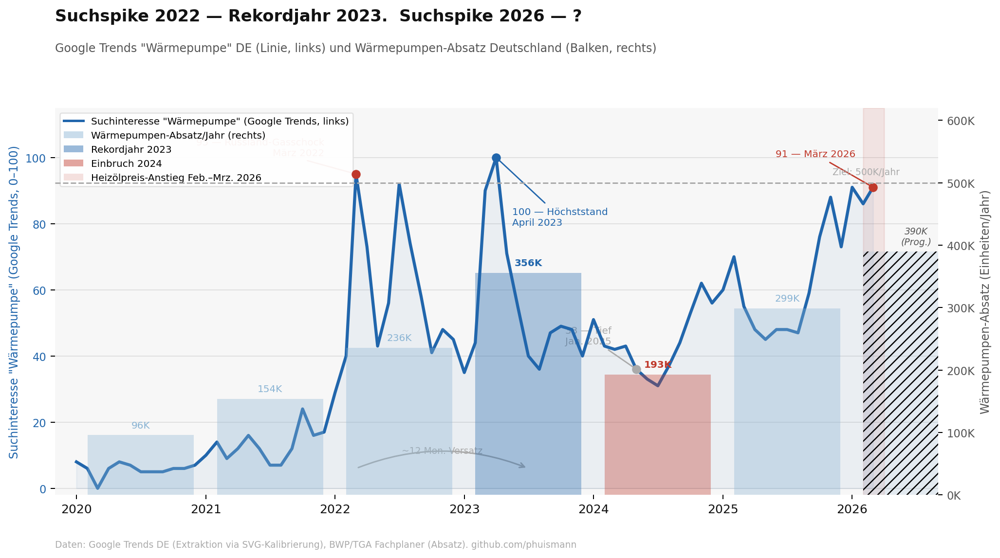

Die Wärmewende tritt seit Jahren auf der Stelle. Gleichzeitig steigen Heizölpreise auf ein Drei-Jahres-Hoch, und Google Trends zeigt für „Wärmepumpe" einen Wert, den wir zuletzt im Frühjahr 2022 gesehen haben.
Deutschland hat ein erklärtes Ziel: 500.000 neue Wärmepumpen pro Jahr. Erreicht wurde es nie. 2023 war mit 356.000 Geräten das bislang stärkste Jahr, und blieb trotzdem 29 Prozent unter der Marke. 2024 folgte ein scharfer Einbruch auf 193.000 Geräte. 2025 erholte sich der Markt auf 299.000, also plus 55 Prozent, aber immer noch 40 Prozent unter dem Ziel.
Das Tempo reicht bei Weitem nicht aus, um die Wärmewende im geplanten Zeitrahmen zu schaffen. Viele Gebäude und Wohnungen in Deutschland werden weiterhin mit Öl beheizt. Je nach Datensatz liegt der Anteil bundesweit bei rund 19 Prozent der Wohnungen bzw. etwa einem Viertel der Wohngebäude; in Bayern, Baden-Württemberg und dem Saarland liegt er deutlich höher, aber nicht annähernd bei jedem zweiten Wohngebäude.
| Jahr | Absatz (Wärmepumpen) | vs. Ziel (500K) |
|---|---|---|
| 2022 | 236.000 | −53 % |
| 2023 | 356.000 (Rekord) | −29 % |
| 2024 | 193.000 | −61 % |
| 2025 | 299.000 | −40 % |
| 2026 (Prognose) | 350.000–430.000 | −14 % bis −30 % |
Seit Ende Februar 2026 ist Rohöl signifikant teurer. Der Brent-Preis stieg von rund 72 auf zeitweise über 120 US-Dollar pro Barrel, ein Anstieg von fast 70 Prozent innerhalb weniger Wochen. Heizöl verteuerte sich im März 2026 stark und lag zeitweise deutlich über dem Niveau vom Herbst 2025. Bundesweite Durchschnittswerte lagen gegen Ende März jedoch eher im Bereich von rund 140 bis 150 Euro pro 100 Liter als bei über 160 Euro.
Für viele ölbeheizte Haushalte bedeutet das eine spürbar höhere Jahresrechnung und damit eine konkrete Frage, die viele vielleicht zum ersten Mal ernsthaft stellen: Wann lohnt sich der Wechsel zur Wärmepumpe?
Google Trends zeigt, wie häufig ein Begriff in einer Region gesucht wird, relativ zum eigenen Maximum im gewählten Zeitraum. Der Index reicht von 0 bis 100, wobei 100 den Zeitpunkt mit dem höchsten Suchvolumen markiert. Absolute Suchanfragen werden nicht veröffentlicht; nur der relative Verlauf ist sichtbar.
Was der Index zeigt: Informationsinteresse. Wer „Wärmepumpe" googelt, informiert sich über Kosten, Fördermöglichkeiten, Installateure. Das ist ein Frühindikator für potenzielle Kaufabsichten, kein direktes Kaufsignal.
Was der Index nicht zeigt: Ob jemand tatsächlich kauft. Zwischen Suche und Installation liegen Finanzierungsentscheidungen, Handwerkerkapazitäten, Wartezeiten und individuelle Haushaltssituationen. Der Suchtrend könnte dem Absatzmarkt vorauslaufen; die Daten legen für den Zyklus 2022/2023 einen deutlichen Vorlauf nahe, belegen aber noch keine stabile historische Regel.
Von 2020 bis Anfang 2022 war das Suchinteresse für „Wärmepumpe" gering und stabil, im einstelligen bis niedrigen zweistelligen Bereich. Wärmepumpen waren ein Nischenthema.
Im Frühjahr 2022 sprang der Index auf 95. Energiepreise waren stark gestiegen, viele Haushalte suchten erstmals aktiv nach Alternativen. Das Suchinteresse blieb erhöht und erreichte im April 2023 mit Index 100 seinen absoluten Höchststand. Im selben Zeitraum folgte mit 356.000 verkauften Geräten das bis heute stärkste Absatzjahr.
Danach normalisierte sich beides. Der Index fiel bis Januar 2025 auf 33. Die Installationszahlen sanken mit auf 193.000 im Jahr 2024.
Ab Herbst 2025 begann eine neue Aufwärtsbewegung im Suchtrend, die sich mit dem Preisanstieg bei Heizöl ab Ende Februar 2026 weiter beschleunigte. Im März 2026 steht der Index bei 91, fast auf dem Niveau des Energiepreisschocks 2022.

Ob der aktuelle Suchspike in einen Installationsboom mündet, ist offen. Das Muster von 2022 wiederholt sich strukturell, aber der Kontext ist ein anderer: Handwerkskapazitäten sind angespannter als 2022, und der Auslöser des aktuellen Preisanstiegs könnte sich schneller entspannen als der jahrelange Energiepreisschock von 2022.
Ob das Suchinteresse dieses Mal genauso in Absatzzahlen übersetzt, werden die Marktdaten für 2026 und 2027 zeigen. Der Index bei 91 ist ein klares Signal, kein Ergebnis.